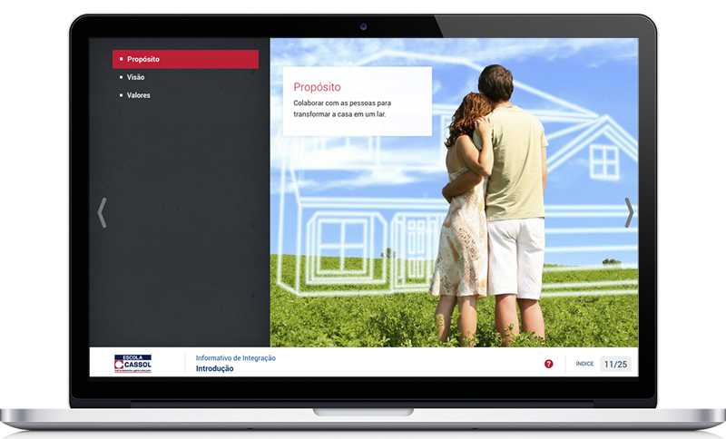
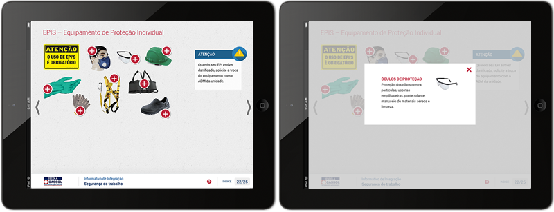

<section class="portfolio-single padding-top-80 padding-bottom-80">
      <div class="container">

        <!-- Images -->
        <div class="row">
          <div class="col-md-8">
            <!-- ITEM -->
            <article class="portfolio-item">
              <div class="portfolio-image">  </div>
            </article>
            <article class="portfolio-item">
              <div class="portfolio-image">  </div>
            </article>
          </div>

          <!-- Content -->
          <div class="col-md-4">
            <div class="port-detail">
              <h4>RH On-line</h4>
              <p><strong>Desafio:</strong> Criar um informativo on-line para dar boas-vindas ao novos funcionários, apresentar algumas características da empresa e dar mais detalhes sobre os benefícios trabalhistas oferecidos. O conteúdo seria disponibilizado numa plataforma de gerenciamento de aprendizagem.</p>
              <p><strong>Solução:</strong> O projeto foi executado em HTML5, com grid responsivo, para que o conteúdo pudesse rodar em qualquer dispositivo. Foram utilizadas animações e ícones para tornar o curso mais leve e atrativo, e para dividir melhor o conteúdo, foram criadas diferentes interações de clicar.</p>
              <p><strong>Diferencial:</strong> Este conteúdo faz o <em>tracking</em> das telas que o usuário já assistiu, para que o gestor tenha o controle efetivo do uso e aprendizado do material.</p>
              <ul class="margin-top-50 margin-bottom-50">
                <li> <span>Cliente</span> Cassol</li>
                <li> <span>Empresa</span> Ilog</li>
                <li> <span>Categoria</span> e-Learning | Treinamento</li>
              </ul>
          </div>
        </div>
      </div>
    </section>